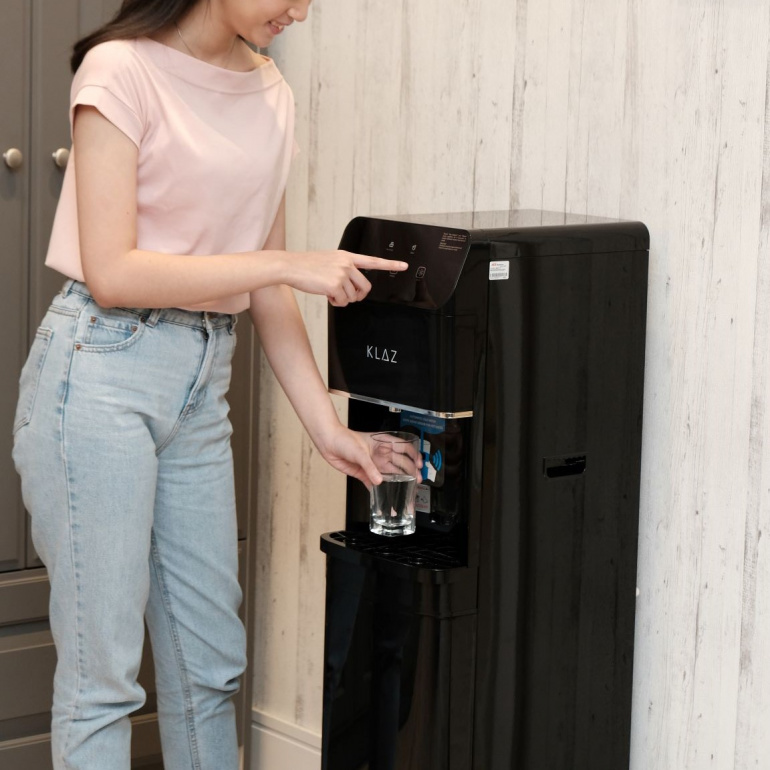

Products
Kulkas

Anda lebih suka memasak di rumah, atau Anda lebih suka membeli makanan di luar ruangan agar lebih praktis. Kulkas sangat penting di rumah. Bagi yang suka memasak, jelas fungsinya untuk menyimpan segala macam bahan makanan segar. Sayuran, daging, ikan, telur, dan beberapa tumbuhan.
Rice Cooker

Hampir tidak mungkin bagi Anda untuk meninggalkan alat elektronik rumah tangga ini. Penanak nasi benar-benar membuat hidup Anda lebih mudah. Cukup masukkan beras bersih, tambahkan air sesuai jumlahnya, dan masak nasi dengan listrik. Sederhana sekali, setiap keluarga di sini pasti memilikinya.
Dispenser
Karena air merupakan kebutuhan mutlak dalam kehidupan sehari-hari, maka sangatlah penting untuk memiliki dispenser. Anda dapat memilih berbagai dispenser mulai dari merk maupun bentuknya. Mulailah dengan dispenser portabel atau dispenser ukuran kecil. Ada juga dispenser galon di atasnya.